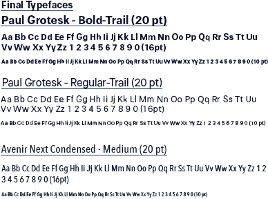
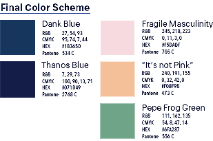
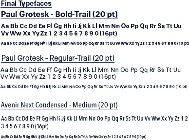
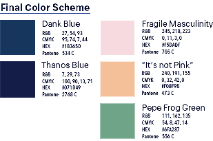
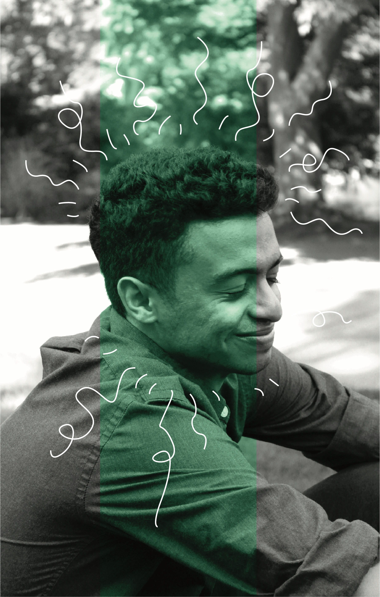
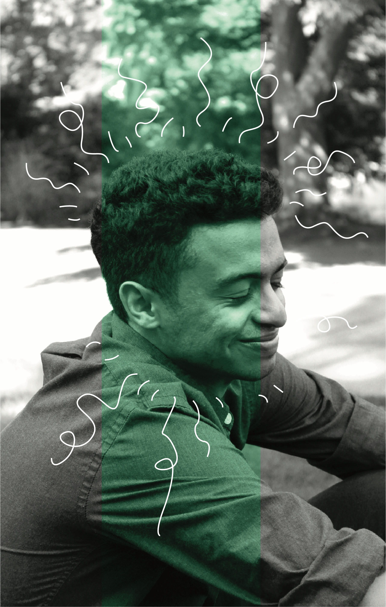

Love GuySelf
Concentration series intended to evoke a feeling of discomfort in viewers
Background, Audience, and Impact
Love GuySelf is a campaign that promotes self-love and care practices in high school boys to combat low self-esteem. Our target audience is high-schoolers (aged 14-18) identifying as male, and who have low self-esteem. High school boys are also more mature than middle schoolers and can have a better grasp the importance of self-love and care. Also unlike middle schoolers, high schoolers have a greater digital reach, since they have used social media platforms for longer and have more developed online social networks.
Our secondary audience is people who identify as a male that does not fall into the age range of our target audience. They can use our campaign to apply and care for their own lives. Those who do not identify as male are a tertiary audience from our campaign, since they may be exposed to some of the self-care and love practices that the high school guys in their lives exposes them to.
Research
Survey
We came up with a survey to better gauge our target audience. The survey is blind unless subjects choose to leave a means of contact for additional inquiries, feedback, or resource requests. We reached out to the Psychology and Human Development Departments at UC Davis for professors that could provide us with feedback on our survey. We also attempted to contact local schools in the area but were unsuccessful.
LAD Process
Love GuySelf will mainly be an educational tool to teach our target audience how to self-love and self-care through a process called “LAD.” The process is a three-step plan, which includes:
- L — Locate the source of low self-esteem, and identifying the source of our target audience’s low self-esteem.
- A — Address need(s). Identifying the needs of our target audience
- D — Determine options. Address the needs of the target audience by providing resources/ redirection
For the first stage of the care process, we plan to make our audience question the source of their low self-esteem. Could it be from family or relationship problems? Body image insecurities? Academic troubles? In the next stage, we would suggest the audience identifying what their needs are to improve their self-esteem. For instance, if they have family problems, is there a certain family behavior that needs to change at home? Do they require attention that is not provided at home? In the last step of the process, we suggest the audience address those needs through a series of recommendations as a game plan to help tackle improvements to their self-esteem.
Development
Campaign Strategy
Love GuySelf reaches its target audience using social media. The co-founders work together to run the social media account, but once trusted ambassadors are deemed responsible, they are permitted to run the social media accounts.

Speaking in person at high schools is another highly important aspect of the campaign. It generates conversation and learning in person, and humanizes the campaign so it becomes more relatable. Initially, there will not be student ambassadors to represent the campaign on the campuses. However, with more promotion and awareness (around 10-12 months time), the campaign will take on a few select representatives from each school, who are called “Fellows,” that give talks of self-love and care on behalf of the campaign at school functions. Fellows are chosen based on merit and volunteering hours and are given an exclusive enamel pin to show their fellowship to the Love GuySelf Campaign.
Merchandise such as hats, t-shirts, crewneck sweaters, pins, lanyards, and stickers are available online for sale as an incentive for the target audience and those who come across the campaign to donate. On a few occasions, these items are available for purchase at tabling events at high school campuses. The donations go to savings that are reserved to produce more merchandise (such as stickers, pins, USB drives, lanyards, and t-shirts) that are handed out at schools and events for social good. All items are viewable and available immediately online.
Budget
The budget is a preliminary projection based on the merchandise and advertising materials for the campaign. The maximum allocated amount given was $25,000 to launch the Love GuySelf campaign.
Branding
Logo Development
The logo of the campaign resembles a male’s face. It consists of the letters L, O, V, and E for “Love.” The V and O are the eyes of the figure, and the V represents a wink. G and S stand for “Guy” and “Self,” and form the face and hair.
Typography and Color
Avenir Next Condensed, a condensed typeface, contrasts nicely with the wider letterforms of Paul Grotesk. The resulting typographic color was more uniform and appealing to younger audiences.
Soft colors like “Fragile Masculinity” and “It’s not Pink” represent the softness of the youth, and bold colors like “Pepe Frog Green”, “Dank Blue”, and “Thanos Blue” represents depth, stability, and boldness. the names are derived from memes and pop culture prevalent in the younger generations.

 



Pattern, Illustrations, and Photo Treatment
The pattern includes illustrations of objects and ideas associated with being a teen guy.
Photos are first made into black and white, then adjusted for contrast and exposure. The colored rectangles stretch from the top to the bottom and are placed over some part of the faces of models present in the photos. White illustrative lines of different weights are used to show expression of emotion in the models, and to convey a mood.

 

Deliverables
Distributables
The research was mocked up to be featured in magazines and other print and digital news media. In addition to the branding merchandise, we developed a hygiene-centered care package, which is the first step for high school students to take care of their physical being, meant to be handed out in school functions. Brochures include a brief introduction to the campaign, the full 3-step LAD Process, and select resources for self care and more drastic resources.
Merchandise
10% of merchandise profits are intended to be donated to our partnered resources that support self-love and self-care.
Credits
Core Team - Linda Huang, Ying Tan, Yoon Rha
Models - Amir Ali, Cole Quinn, Darren Wong